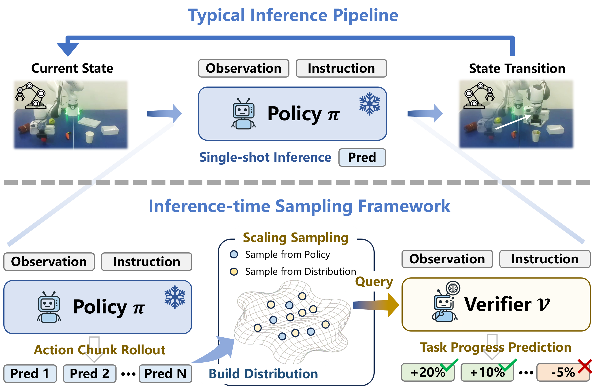
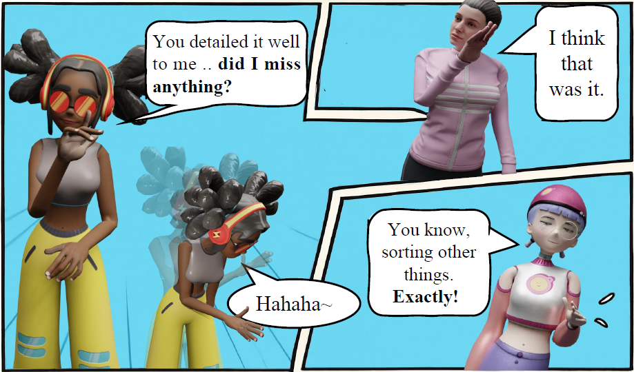

About Me
Hi! I am Weiyu Zhao, a Ph.D. student in the School of Computer Science at Harbin Institute of Technology . I am advised by Prof. Shengping Zhang and Assoc. Prof. Shaohui Liu. My research focuses on embodied intelligence, especially learning robot manipulation from human videos, audio and text-driven motion synthesis, and mobile manipulation.
Background
Publications



Contact
weiyuzhao66@gmail.com